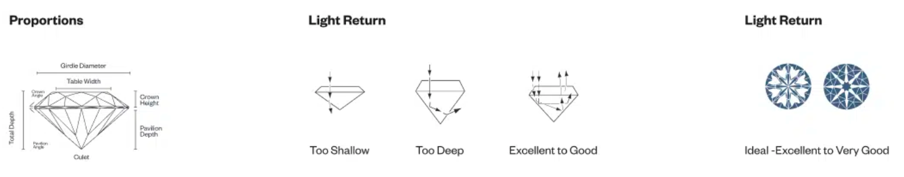
Apply bivariate analyses to our research project
Justin Leinaweaver (Spring 2024)
‘cut’ and ‘clarity’
‘cut’ and ‘price’
‘carat’ and ‘price’
Source: ‘diamonds’ dataset in tidyverse
cut and clarity?
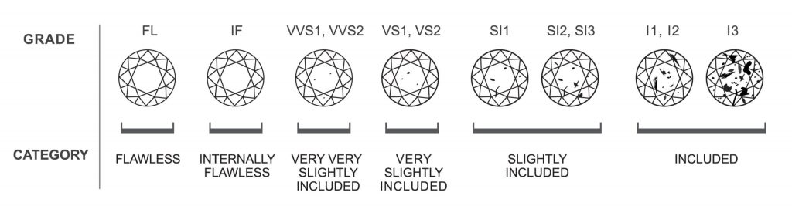
ggplot(diamonds, aes(x = clarity, fill = forcats::fct_rev(cut))) +
geom_bar(position = "fill") +
theme_bw() +
scale_y_continuous(labels = scales::percent_format()) +
scale_fill_brewer(type = "seq", palette = 4) +
labs(x = "Diamond Clarity", fill = "Cut Type",
caption = "Source: The Loose Diamonds Search Engine",
title = "Jewelers appear to use greater care when shaping higher quality diamonds")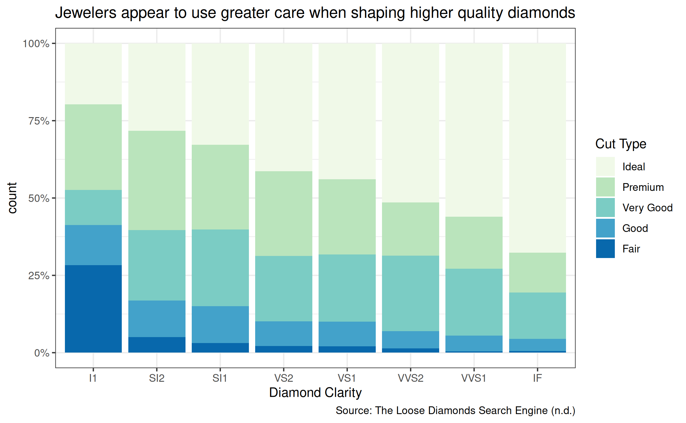
cut and price?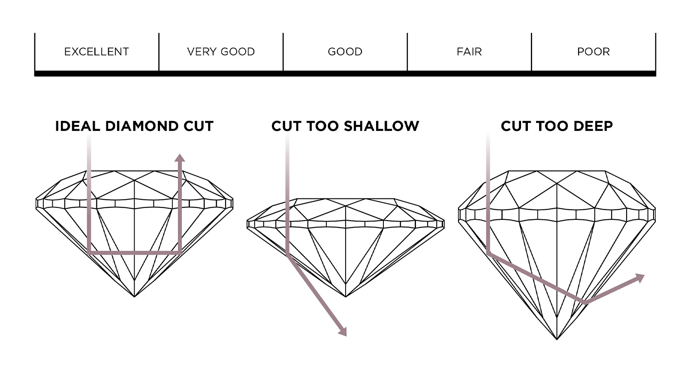
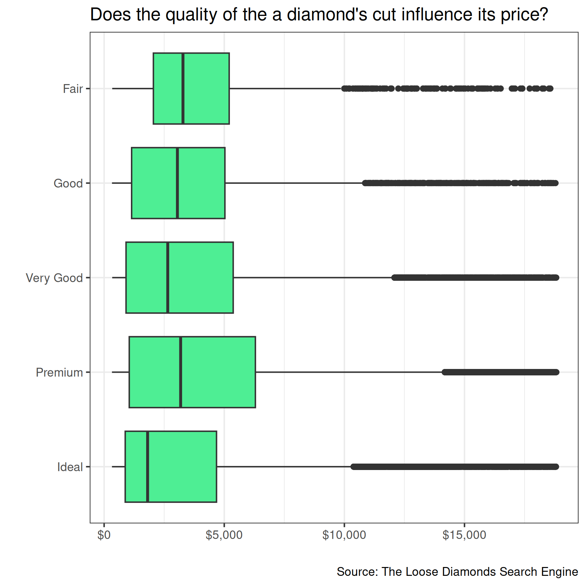
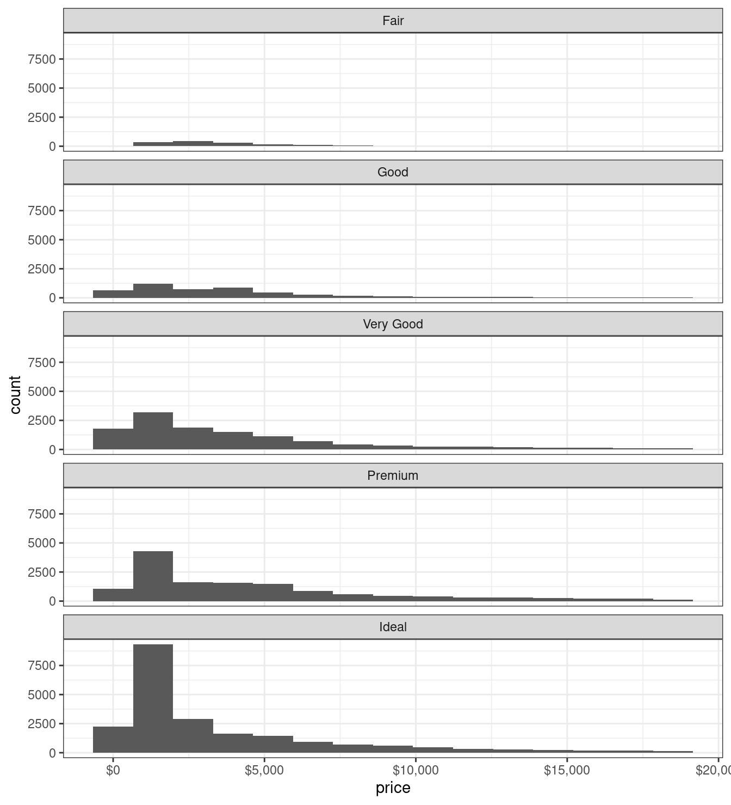
carat and price?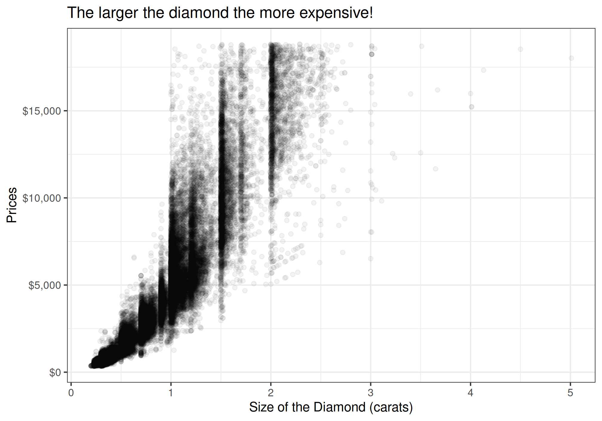
CoW NMC Dataset
cincmilexmilperirstpectpopupop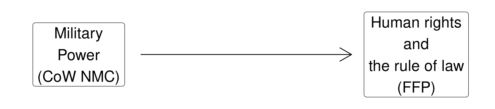
Fund for Peace Dataset
P3_Human_RtsCoW NMC Dataset
cinc_pctmilex_billionsmilper_thousandsirst_millionspec_thousand_tonstpop_millionsupop_millionsFund for Peace Dataset
P3_Human_RtsCorrelations with P3_Human_Rights
cinc_pct milex_billions milper_thousands irst_millions
0.05 -0.06 0.19 0.05
pec_thousand_tons tpop_millions upop_millions
0.03 0.11 0.08 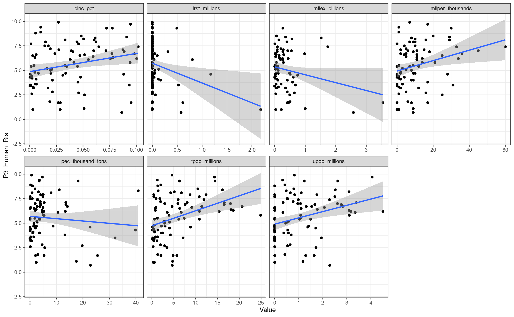
Correlations with P3_Human_Rights
cinc_pct milex_billions milper_thousands irst_millions
0.26 -0.22 0.27 -0.26
pec_thousand_tons tpop_millions upop_millions
-0.09 0.38 0.31 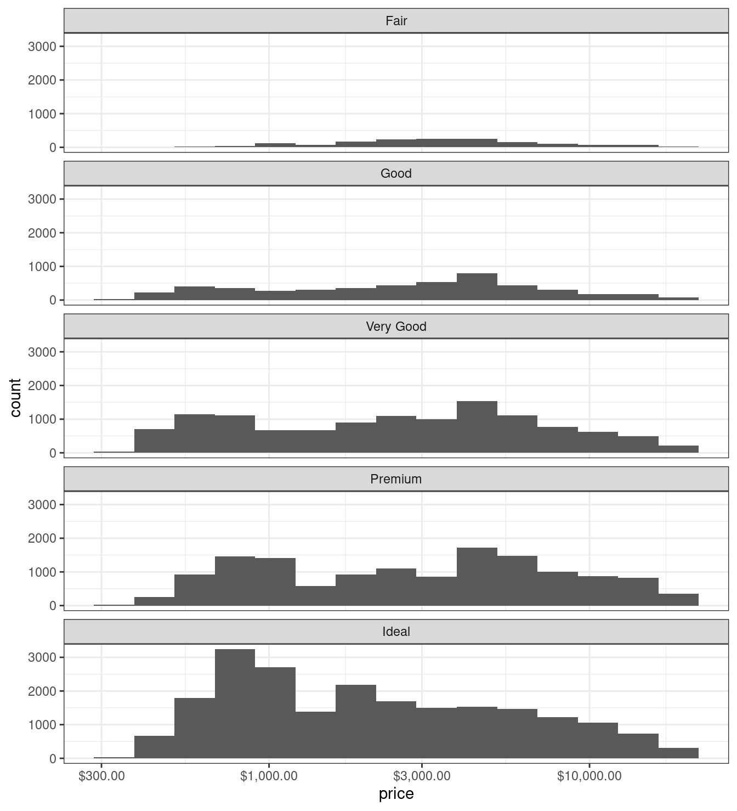
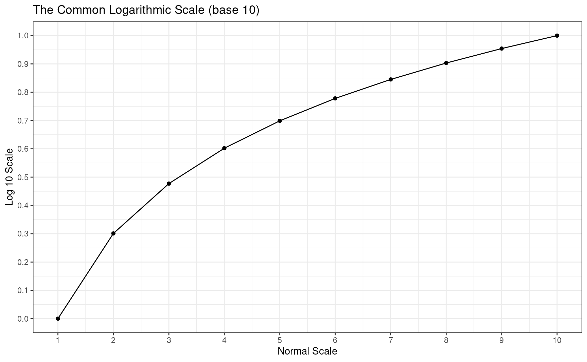
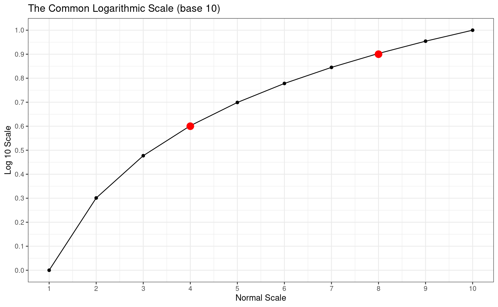
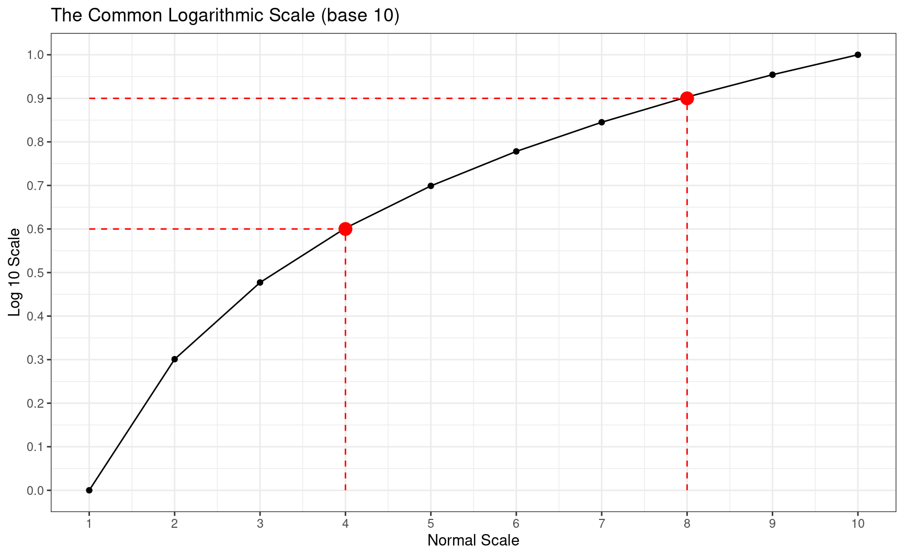
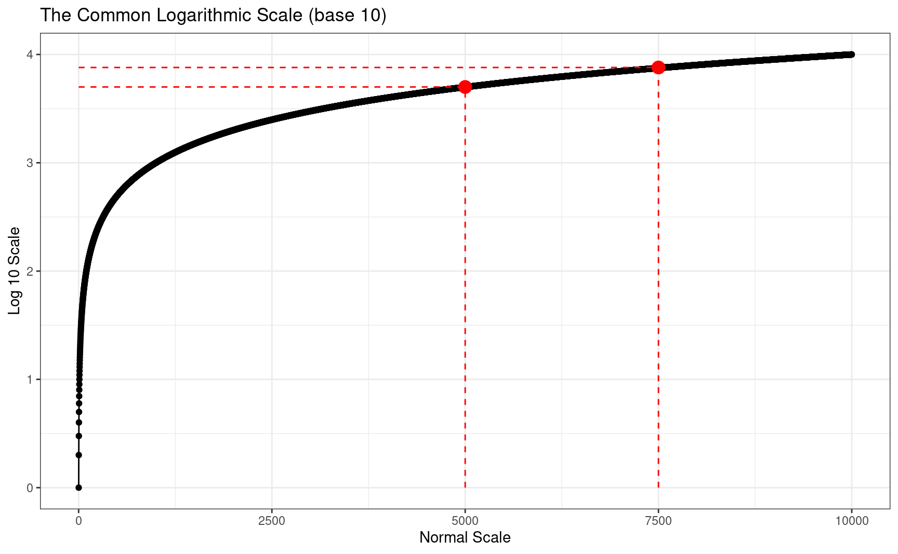